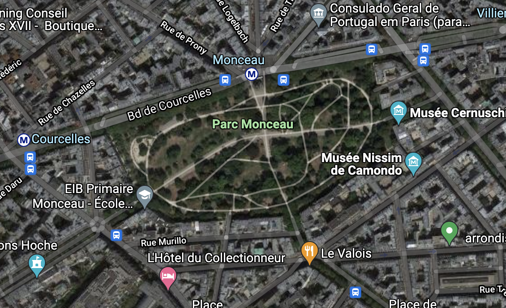

0/5
Living & nonliving
explorative walk—
Foot traffic
Navigating Paris with a sprained ankle has
made me more aware of fast-paced, highly populated spaces, especially when I am considerably slower than the rest of the city.
In this study, I document Foot Traffic in
various public spaces as signs of living.
